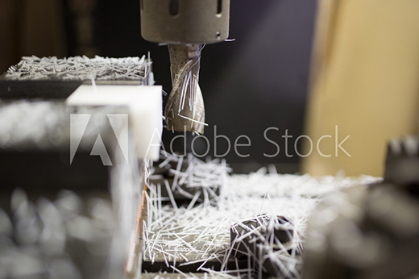

設備力について
いつ、どのような場面でもお客様のベストパートナーであり続けるために。三光化成では各生産拠点に最新鋭の機器や技術を備え、高品質なプラスチック精密部品を供給できる体制を整えております。全国各地にある生産拠点においては、工場間での柔軟・迅速な設備移動などにも対応。お客様のご要望にしっかりとフィットする対応力で、ものづくりを完全サポートいたします。
国内拠点のご案内
国内ではこれまでの10拠点に、三原市広島工場を新たに加え、計11拠点でお客様のさまざまなご要望にお応えいたします。
| 三光化成株式会社 本社 |
| 事業案内 |
総務・経理などの本社管理機能、さらに営業活動、製品設計、生産技術、資材購入の主力拠点となっております。
|
| 朝霞工場 |
| 事業案内 |
品質保証、購買、製品試作、金型補修整備環境を備えた生産技術の活動拠点 |
| 福島工場 |
| 事業案内 |
小型～中型の成形機を保有し、成形～部品調達～完成品までを行う幅広い業種業態に対応した主力工場 |
| 多治見工場 |
| 事業案内 |
最新の付帯設備を備え、小型～大型までの成形機を保有する中京地区の最新鋭工場 |
| 広島工場 |
| 事業案内 |
平成28年11月に広島県三原市に建設した最新の工場 |
| 一関工場 |
| 事業案内 |
営業活動、生産技術、設備技術、品質保証、購買管理の主力拠点/小型～中型を中心とした成形機を保有し、自働化された設備で精密機構部品を生産する主力工場 |
| 一関第二工場 |
| 事業案内 |
中型～大型の成形機を保有し、自動車の内装品、外装品を中心に自動車部品の生産に特化した工場 |
| 宮城工場 |
| 事業案内 |
自動車部品およびデジタル機器、メディア関連部品などに対応して外観部品を多く生産する工場。 |
| 弘前工場 |
| 事業案内 |
小型～大型の成形機を保有し、OA機器等の機構部品を生産する新鋭工場 |
| 花泉工場 |
| 事業案内 |
自動車の重要保安部品である給油口から燃料タンクの樹脂製パイプの組立工場
|
| 金型工場 |
| 事業案内 |
CAD・CAE・CAMシステム、最新鋭のMCなど高精度加工を駆使したプラスチック金型の設計、製作専門工場 |
海外拠点のご案内
中国蘇州と大連に成形・組立生産拠点を、メキシコに成形生産拠点を設け、グローバルな生産体制を構築しております。
| 三光化成塑膠（蘇州）有限公司（中国） |
| 事業案内 |
蘇州市にあり、金型設計から成形、組立までの一貫生産を行う中国主力工場 |
| 三光化成塑膠（大連）有限公司（中国） |
| 事業案内 |
大連市にあり、金型設計から成形、組立までの一貫生産を行う中国第二の工場 |
| SANKO MEXICO S.A.de C.V.（メキシコ） |
| 事業案内 |
モンテレーに位置し、自動車用成形品を生産する工場 |
設備紹介
充実の設備と対応力で、工業用精密プラスチック部品の設計から生産、出荷までトータルサポートいたします。まずはお気軽にご相談ください。